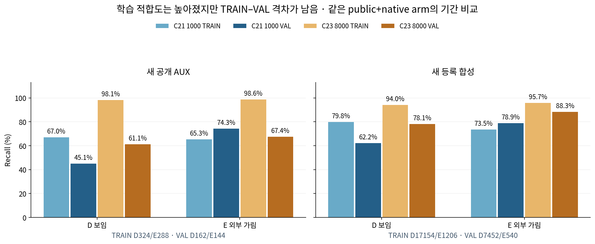
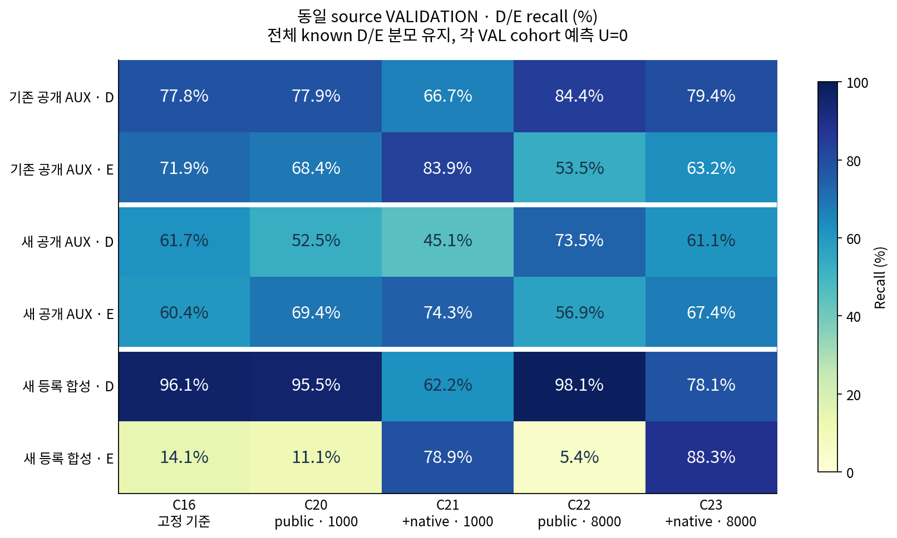

C23의 새 공개 TRAIN은 D 318/324 (98.1%), E 284/288 (98.6%)까지 올랐지만 validation은 D 99/162 (61.1%), E 97/144 (67.4%)입니다. 등록 합성도 TRAIN D 94.0%, E 95.7%와 validation D 78.1%, E 88.3% 사이 격차가 남았습니다. C22·C23 모두 기존 source 기준 미달이며 새 current 평가 권한은 없습니다. 학습 횟수 부족만으로 앞선 실패를 설명하거나 더 오래 학습하면 해결된다고 결론 내릴 수 없습니다.
새 데이터·feature·head·loss·lr·seed·threshold 없이 고정 1,000회 → 고정 8,000회만 비교했습니다. C22는 public replay, C23은 동일 public batch + native D/E 균형 batch입니다. 두 arm 모두 C16 step4500에서 시작했습니다. 첫 1,000회의 sampler·매-step loss/gradient·모델 state SHA가 각각 V129와 비트 단위 일치했고 같은 optimizer로 7,000회를 연속 수행했습니다. 두 arm의 8,000회 최종 상태를 고정한 뒤 VAL을 읽었으며 VAL checkpoint 선택은 없습니다.


아래 CM은 행 D/E, 열 예측 D/E/U입니다. 예측 U를 recall 분모에서 제외하지 않았습니다. 이 세 validation의 known 입력 U는 모두 0이며, teacher U와 기하 S는 D/E 정답에 섞지 않고 JSON에서 별도로 보존합니다.
| cohort | 모델 | CM [[D→D,D→E,D→U],[E→D,E→E,E→U]] | D P | D R | E P | E R | 예측 U/known |
|---|---|---|---|---|---|---|---|
| 기존 공개 AUX | C16 | [[1484, 424, 0], [470, 1204, 0]] | 75.9% | 77.8% | 74.0% | 71.9% | 0/3582 |
| 기존 공개 AUX | C20 | [[1487, 421, 0], [529, 1145, 0]] | 73.8% | 77.9% | 73.1% | 68.4% | 0/3582 |
| 기존 공개 AUX | C21 | [[1272, 636, 0], [270, 1404, 0]] | 82.5% | 66.7% | 68.8% | 83.9% | 0/3582 |
| 기존 공개 AUX | C22 | [[1611, 297, 0], [779, 895, 0]] | 67.4% | 84.4% | 75.1% | 53.5% | 0/3582 |
| 기존 공개 AUX | C23 | [[1514, 394, 0], [616, 1058, 0]] | 71.1% | 79.4% | 72.9% | 63.2% | 0/3582 |
| 새 공개 AUX | C16 | [[100, 62, 0], [57, 87, 0]] | 63.7% | 61.7% | 58.4% | 60.4% | 0/306 |
| 새 공개 AUX | C20 | [[85, 77, 0], [44, 100, 0]] | 65.9% | 52.5% | 56.5% | 69.4% | 0/306 |
| 새 공개 AUX | C21 | [[73, 89, 0], [37, 107, 0]] | 66.4% | 45.1% | 54.6% | 74.3% | 0/306 |
| 새 공개 AUX | C22 | [[119, 43, 0], [62, 82, 0]] | 65.7% | 73.5% | 65.6% | 56.9% | 0/306 |
| 새 공개 AUX | C23 | [[99, 63, 0], [47, 97, 0]] | 67.8% | 61.1% | 60.6% | 67.4% | 0/306 |
| 새 등록 합성 | C16 | [[7165, 287, 0], [464, 76, 0]] | 93.9% | 96.1% | 20.9% | 14.1% | 0/7992 |
| 새 등록 합성 | C20 | [[7120, 332, 0], [480, 60, 0]] | 93.7% | 95.5% | 15.3% | 11.1% | 0/7992 |
| 새 등록 합성 | C21 | [[4636, 2816, 0], [114, 426, 0]] | 97.6% | 62.2% | 13.1% | 78.9% | 0/7992 |
| 새 등록 합성 | C22 | [[7313, 139, 0], [511, 29, 0]] | 93.5% | 98.1% | 17.3% | 5.4% | 0/7992 |
| 새 등록 합성 | C23 | [[5817, 1635, 0], [63, 477, 0]] | 98.9% | 78.1% | 22.6% | 88.3% | 0/7992 |
같은 입력 표현과 head가 새로운 TRAIN 자료에는 훨씬 잘 맞출 수 있었습니다. 따라서 1,000회 결과만으로 feature가 필요한 정보를 전혀 담지 못한다고 주장할 수 없습니다. 반면 public-only C22는 새 공개 TRAIN D/E가 모두 100%이지만 VAL D 73.5%, E 56.9%입니다. C23도 TRAIN 개선에 비해 새 공개 VAL은 제한적이고, 합성에서는 E 개선과 D 누락이 동시에 남습니다. 단순 미관측 coverage만으로도 설명되지 않았으며, 이 결과는 과적합·자료/목표 차이 등의 가능성과 부합하지만 원인을 하나로 증명하지 않습니다. 다음 단계는 아직 새 학습으로 확정하지 않았습니다.
| 8,000회 arm | 통과 | 실패한 동일 prospective 기준 |
|---|---|---|
| C22 | 4/8 | old_public_E, PUBLIC_AUX_VAL_D, PUBLIC_AUX_VAL_E, NATIVE_VAL_E |
| C23 | 4/8 | old_public_E, PUBLIC_AUX_VAL_D, PUBLIC_AUX_VAL_E, NATIVE_VAL_D |
Native는 192개 base·768개 장면의 반복 q8/slot 조건이며 validation D7452/E540/S2880/U7560을 보존했습니다. 새 공개 AUX는 weak cue 6개, 원래 5개 take group(TRAIN 3·VAL 2)의 조건 반복입니다. 표의 수천 행은 독립 실사 수천 장이 아닙니다. source VAL은 이미 개발에 노출됐으므로 새 blind 일반화 증거가 아닙니다.
구조 cue region의 D/E와 q 픽셀 target 존재 여부는 다릅니다. S는 기하 경로로 별도 처리하며 외부 E loss에 넣지 않았습니다. 공개 weak region을 human/native exact gold로 승격하지 않습니다. 합성 재질 wood/polymer와 형상 rectangular/square는 독립 축이며 실제 WOOD/SQUARE 평가군과 다릅니다. C16/v61 baseline과 q-pixel 별도 진단 · V129 1,000회 source 보고서
이 보고서는 저장 source JSON만 읽었습니다. 새 모델/encoder/fit·현재223/V112·좌표 보정·PnP 접근이 없습니다. 실제 V124 current 결과는 그대로이며 목표가 해결되거나 실사 성능이 개선됐다는 주장은 하지 않습니다. broader old15 regression gate는 계산하지 않아 PASS라고 주장하지 않습니다.